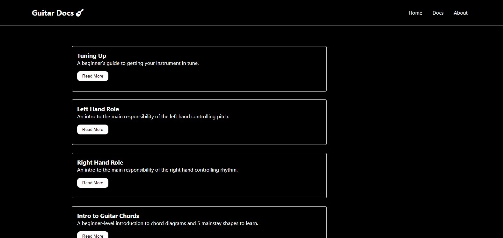

Officially finished the first half of the Odin Project JavaScript course, today was a pivot into React.
Today was largely spend going through the React documentation and practicing the basics. I had spent a few weeks last summer getting into the framework, but sadly my efforts were a bit rush, and then when school resumed a few weeks into it, my focus started to wane. Now I'm excited to really build out a few projects to bolster my portfolio, and feel that I am a lot more equipped with a few weeks of focused work in JS under my belt.
To practice the basics, I started by building a guitar documentation site. I like the aesthetic of the React docs so much, I figured it would be a good UI to imitate to practice different React fundamentals. I also had spent time building a tiny task tracker app, just to get more practice starting a new project using create-react-app, cleaning up the boilerplate files, and then linking together various components. I remember being totally overwhelmed when I started looking at React last summer, but I can say that I feel much more in my comfort zone since I've invested time into learning about/practicing more advanced JS concepts like AJAX, webpack, higher-order functions, and module imports/exports.
Here is a snapshot of the guitar docs practice project:
Here is a snapshot of the basic todo list app: